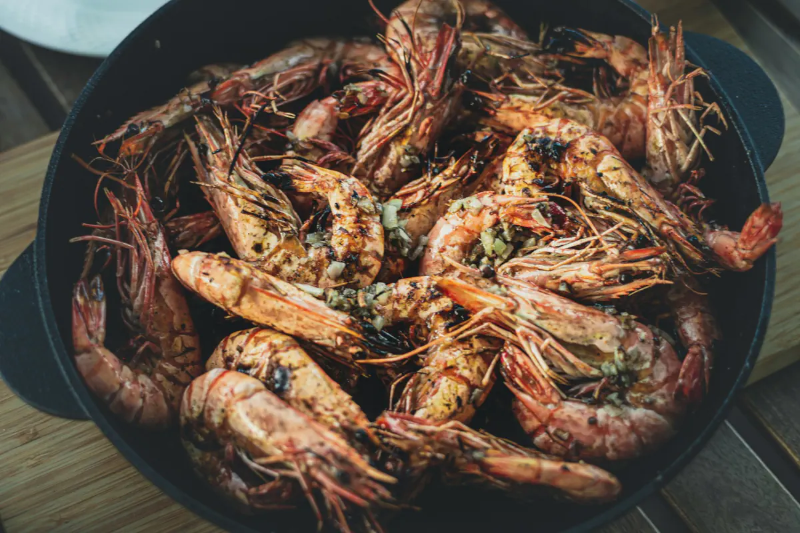

Udang Cabe Garam

Description
Udang cabe garam is a dish of shrimp that's deep fried and then refried with a chili-salt mix, and is quick to prepare while giving you a spicy, umami flavor.
Ingredients
For the shrimp
- 500 gr medium size shrimp
- 1 tsp baking powder
- ⅕ tsp white pepper powder
- 2 tbsp vinegar
- 2 tbsp egg white
- Salt to taste
- 4 tbsp cornstarch
- Cooking oil for deep frying
For the sauce
- 5 cloves garlic, peeled, finely minced
- 2 shallots, peeled, finely minced
- 1 big red chili, minced
- 1 bird's eye chili, minced
- 1 spring onion, chopped
- Dash of white pepper powder
- Salt to taste
- 1 tbsp oyster sauce
- ⅕ tsp mushroom stock powder (optional)
- 4 tbsp cooking oil
Steps
- Remove the shrimp head, cut the back of the shrimp using scissors, and devain.
- Wash the shrimp thoroughly and place in a bowl.
- Marinate the shrimp with baking powder, white pepper powder, vinegar, egg, white, salt and cornstarch for 15 minutes.
- Deep fry the shrimp with enough oil, for around 3 minutes, over medium high heat. Do it in several batches.
- Leave the shrimp to rest for about 5 minutes.
- Re-fry the shrimp for less than 1 minute to crisp the skin. Set aside.
- Heat 4 tbsp cooking oil over medium heat and fry garlic over medium heat for around 3 minutes or until the garlic turns slightly golden. Set aside.
- Remove all the leftover garlic in the pan to avoid burning and sautee the shallots, chillies and spring onion for a few seconds.
- Add the white pepper, salt, oyster sauce and mushroom stock powder. Saute for another 2 minutes. Turn off the heat.
- Add the fried garlic, and mix.
- Add the fried shrimp, mix thoroughly.
- Transfer the shrimp onto a serving dish.
Home